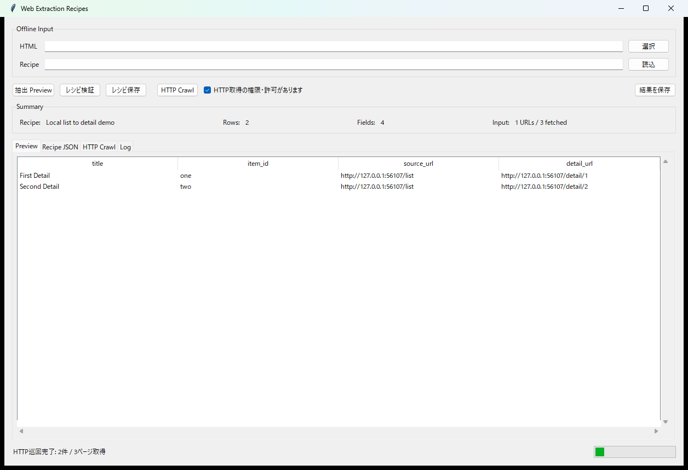

Recipe-based extraction
繰り返し要素、text、attribute、相対URL、正規表現などの抽出規則をJSONとして保存し、別HTMLへ再利用できます。
Web Extraction Recipes · Python / Tkinter / HTML / HTTP
v0.4.0 RC

以前使っていたサイト別の抽出スクリプトを、抽出規則をJSON Recipeとして保存する方式へ作り直したWindows向けツールです。ローカルHTMLの解析を基本にしつつ、許可のある公開ページでは一覧ページから詳細ページへ巡回し、同じRecipeを再利用できます。
繰り返し要素、text、attribute、相対URL、正規表現などの抽出規則をJSONとして保存し、別HTMLへ再利用できます。
保存済みHTMLだけで抽出・Preview・TSV / CSV / JSON出力まで完結します。UTF-8とCP932入力にも対応します。
一覧ページからdetail URLを収集し、詳細HTMLへ既存Recipeを適用します。source_url / detail_urlも結果へ残します。
GUIでRecipeの編集・検証・保存、抽出Preview、HTTP Crawl、結果保存を一つの画面から扱えます。
Windows向けソースRelease Candidateです。Python 3.10以上とTkinterを使用し、抽出・HTTP取得コアはPython標準ライブラリだけで動作します。